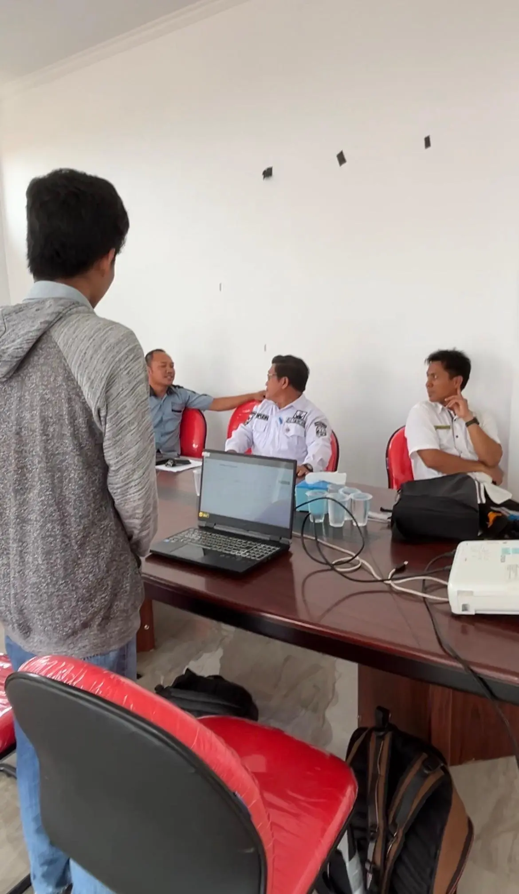
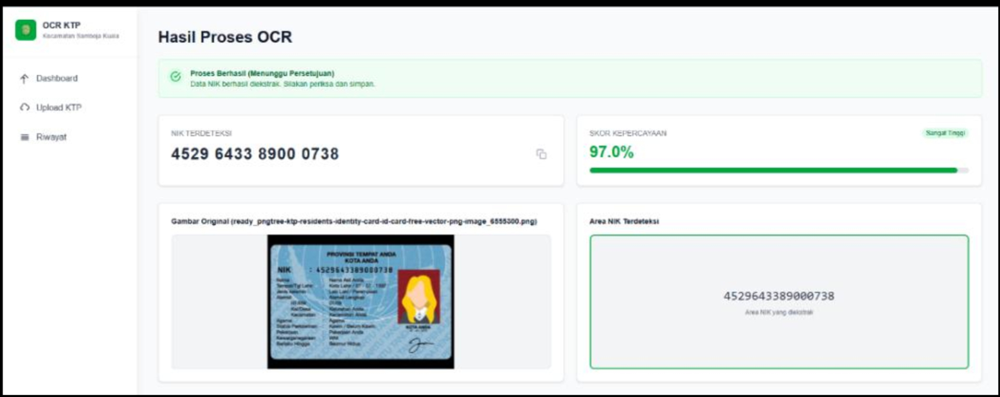
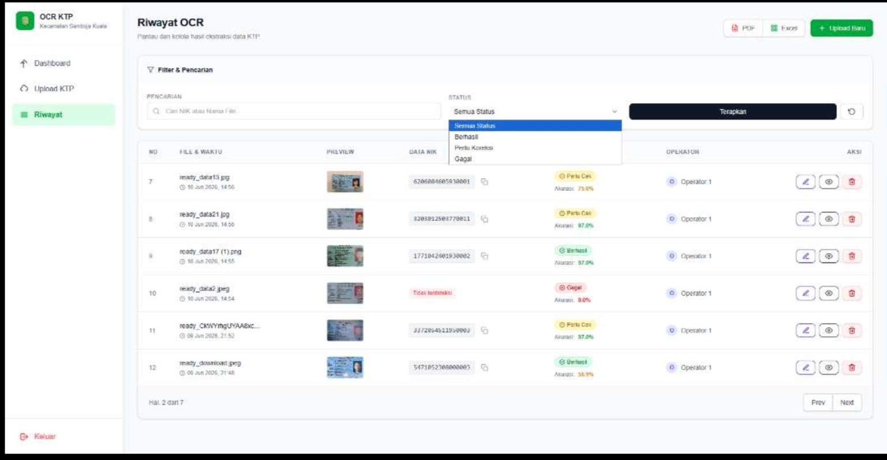
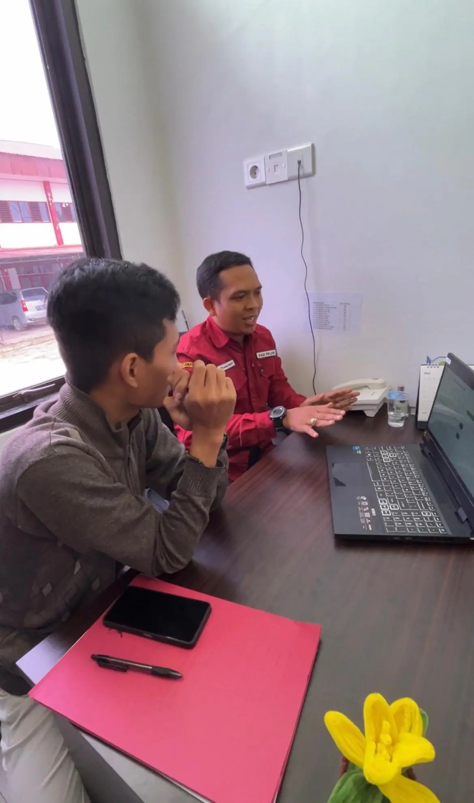

01 · The dashboard
A CLEAR STARTING POINT
The dashboard puts scan activity and admin summaries in one clear view, making everyday tasks easier to follow.
Featured project · Samboja Kuala District
This project grew from real conversations with staff at Samboja Kuala District about the challenges of manually entering resident ID numbers. I built an OCR-based web app to scan ID cards, manage resident records, and bring admin data into one dashboard. The photos below show the people and collaboration behind the project.
Made for everyday admin work
The project in action
01 · The dashboard
The dashboard puts scan activity and admin summaries in one clear view, making everyday tasks easier to follow.
02 · User feedback
A visit to Samboja Kuala District to hear directly from staff and understand their day-to-day data entry process.


03 · OCR in action
The OCR feature reads an uploaded ID card and extracts its NIK for staff to review.
04 · Record management
A searchable table keeps scan results organized and makes resident records easier to find and manage.


05 · Testing and handover
A hands-on session with district staff to try the app and get feedback on how it fits their work.